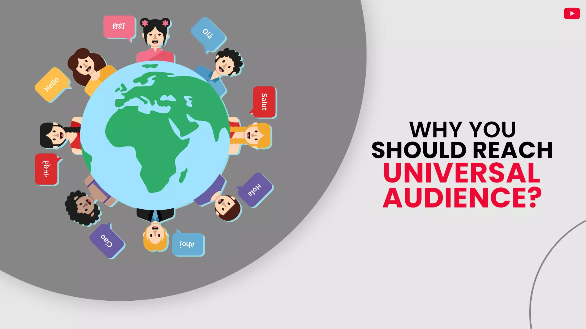
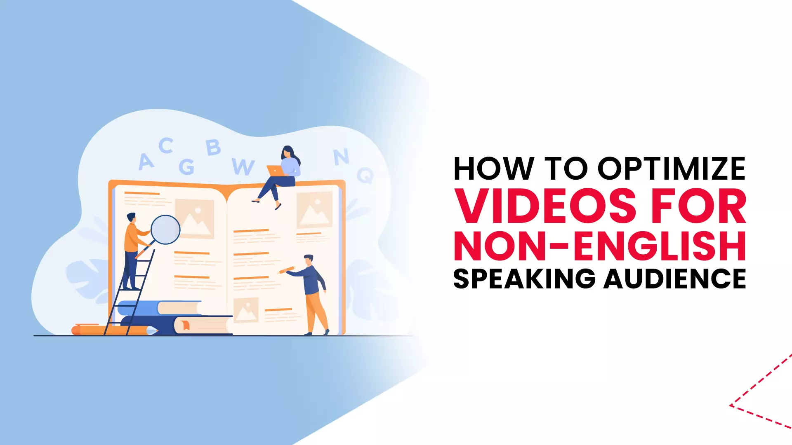
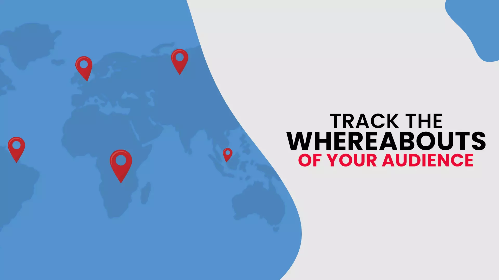
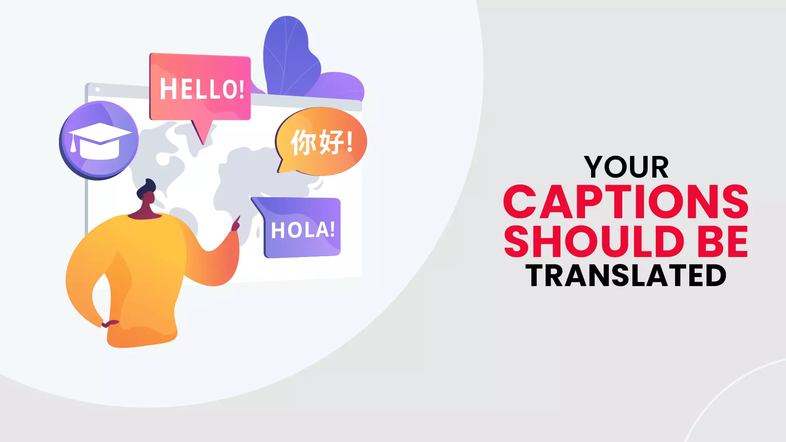
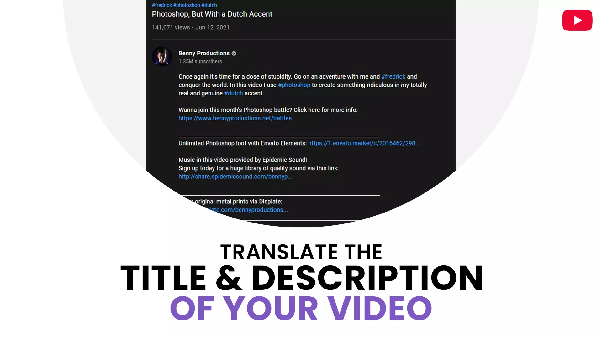
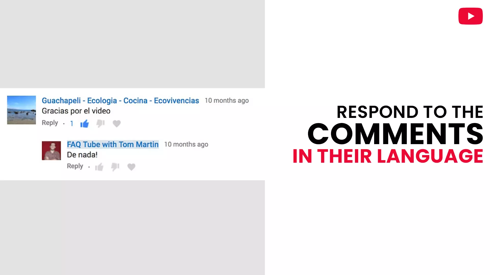
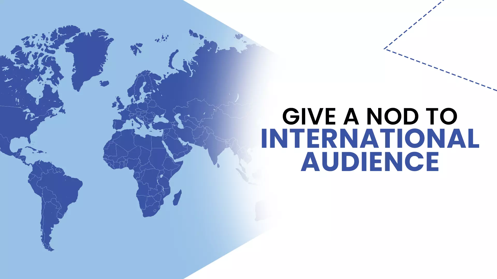
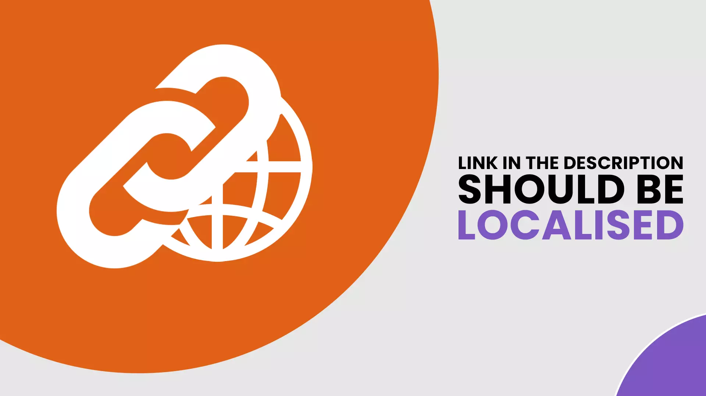
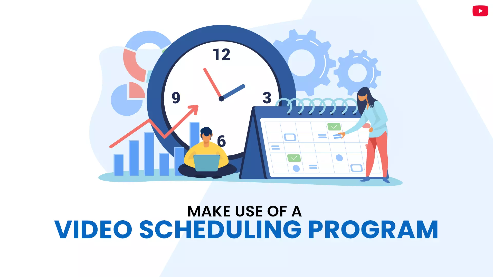

It's easy to get enthusiastic about YouTube having over 2 billion viewers monthly as a company owner. However, data show that 85 percent of these consumers are not from the United States. Only 33% of popular YouTube videos are in English, indicating that a significant portion of YT users are non-native English speakers. As a result, if you're serious about sharing your material, you should think about optimizing your videos to reach YouTube viewers by language other than English.
Let’s take a deeper look into this.
Contents
- Why you Should Reach a Universal Audience on YouTube
- How to Optimize Videos for Non-English-Speaking Audience?
- Track the Whereabouts of Your Audience
- Your captions should be translated
- Translate the title or description of your channel
- Respond to the comments in their language
- Give a nod to your international audience as it grows
- Links in the description should be localized
- Make use of a video scheduling program
Why you Should Reach a Universal Audience on YouTube

Image Source- Social Media Examiner
YouTube is a huge and ever-changing platform. Pew Study Center restricted the scope of data gathering to only the most popular channels on the site in order to create a feasible and useful research endeavor. During the first week of the year, these prominent channels alone created 243,254 videos, totaling 48,486 hours of material. Atypical video was 12 minutes long, however the duration of movies posted during this time period varied greatly: just 3% of videos were longer than 60 minutes.
These statistics also hint at the magnitude of how many hours individuals view videos on the platform throughout the world. After one week on the web, the videos created by these famous channels had been seen over 14.2 billion times globally. Of course, these views were spread out over a large number of films; each video had an average of 58,359views in its first week, with half of them receiving less than 3,870views. Conversely, only a tiny percentage of these films had significant engagement: the top 10% of most-viewed videos accounted for 79% of all views to new content released by prominent channels throughout the week.
Videos got the highest interaction on their initial day on the site, with engagement decreasing over the course of the week after they were published due to which focus should be on how to make your Youtube channel international. In their first week on the platform, these videos got two-thirds (64%) of their total views, as well as 79 percent of their likes, 73 percent of their dislikes, and 80 percent of their comments on the day they were released.
Most of thechannels that released videos in the first week of the year did so in a different language, and only a few channels generated the majority of the videos.

Image source- Fluenta.com
During the first week of the year, just over half of the most popular YouTube channels uploaded at least one video to the site, with the majority of them including portions in languages other than English to get YouTube viewers by language. According to Pew Research Center, 56 percent of the 43,770 popular channels identified in December 2020 released a video in the first week of the New Year. Within this group of active channels, 28% of them only posted videos in English. However, 67% of those who submitted videos did so entirely in different languages, and 5% did so in several languages, including English.
The quantity of content generated by “active” channels (those that released at least one video in the first week of 2021) varied greatly in the first week of 2021. Three out of ten (31%) of these prominent active channels posted precisely one video, while 55% posted more than one but less than ten. Despite the fact that just 14% of channels uploaded 10 or more videos during the research period, this subset was responsible for releasing 75% of all videos published by popular channels throughout the week.
This highly active group was more likely to have channels that were posted in both English and another language. Only 8% of English-only channels had 10 or more videos, but that percentage rose to 16% for channels that posted exclusively in other languages and 37% for channels that broadcast videos in both other languages and English creating a bilingual YouTube channel.
How to Optimize Videos for Non-English-Speaking Audience?

Follow the tips given below to optimize your videos for an audience other than English:
-
Track the Whereabouts of Your Audience

You should keep track of where your readers originate from for two reasons. Determine where the majority of your readers come from and tailor your video content marketing approachaccordingly.
As not all of your prospects may understand English, you should also keep note of their location. While there is a sizable English-speaking YouTube audience, the platform's discovery algorithms do not ensure that your video will be recommended to them.
Log into Creator Studio, go to Analytics, and then Subscribers to track your audience's location on YouTube. The Subscribers page displays information about your subscribers, such as geographic location or status of the subscription.
-
Your captions should be translated

When you know which nations are the most popular for your material, try translating video subtitlesinto the original languages of those countries to make a bilingual YouTube channel. Use YT’s built-in translation technology to translate captions if you're on a budget. However, the platform's translation system's correctness and dependability cannot be guaranteed. You may need to engage a professional video translation services business to correctly communicate your content to your target audience. For the people who are thinking as to can I upload same video in a different language on YouTube, you can do that as well.
-
Translate the title or description of your channel

When visitors from other countries visit your Youtube account, you can be sure they're interested in what they've watched so far. Offering a channel descriptionin their language is one approach to retain their interest and one of the best ways if you’re looking for how to get international views on Youtube.
You may impact the SEO of your whole channel by providing a translated description. If you write a decent English-language channel description, it will be keyword-rich. You're urging the platform to send those new audiences your way by translating these keywords into additional target languages.
-
Respond to the comments in their language

If you want people from all over the world to view your films, treat them in the comments the same way you treat your English-speaking audience.
You don't need to have extended dialogues in other languages; a simple acknowledgment of secondary language comments would suffice to attract YouTube viewers by Language. It may also inspire people to make similar comments in the future. Demonstrating your YouTube audience that you're ready to go above and beyond will encourage them to become followers and, eventually, buyers.
-
Give a nod to your international audience as it grows

Everyone enjoys being acknowledged. While you don't have to make dual-language YT video to appeal to regional audiences, there are a few things you may do:
- Incorporate them into contests and prizes.
- Acknowledge the national holidays that they celebrate.
- Give shout-outs to people from all around the world who have left comments.
Keep in mind that video is a more personal medium than other types of content marketing due to which over 1 billion hoursof videos are watched on Youtube daily Speak directly to your audience and show that you're thinking about them to get them to know, like ortrust you. Giving a gesture to regional audiences on occasion may go a long way.
-
Links in the description should be localized

Localization is frequently used in conjunction with translation. When you wish to communicate in a foreign language, localization is critical.
Prospects from other countries value thoughtfulness. Instead of sending visitors to English-language sites, you may localize your links to send them to sites in their native tongue. You may give important material to your non-English speaking readers by localizing your links reflecting your YouTube channel in multiple languages.
-
Make use of a video scheduling program

Regularly posting amusing, engaging, and informative video is a certain method to increase your YT subscriber count. Determine the optimum time to distribute your content for consumers in different time zones. This is where video scheduling solutions come in since they can help you plan your films and release them at certain times and dates.
Conclusion
When it comes to attracting views on YouTube, the competition is fierce. If you're only trying to reach an English-speaking audience, you'll have to go above and beyond to increase your subscription base and sustain viewing (One of the best ways to grow fast irrespective of the neck-to-neck competition as there are 38 million active channelson YouTube or uncertainty that exists as to whether you will be successful or not is to buy Youtube subscribers. On the same hand, by utilizing savvy business translation strategies, you may work smart and increase your reach by tapping into the platform's millions of non-English speakers.
Do share your experience!